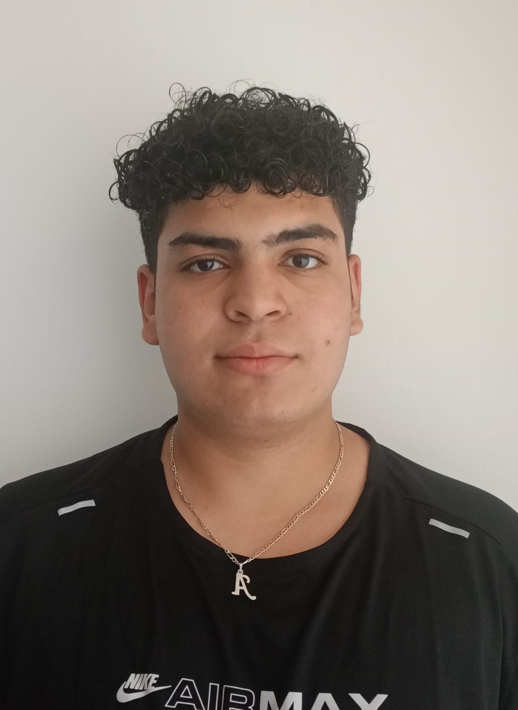

Curriculum Mohamed Amine Kartibou
Informació personal:
Mohamed Amine Kartibou
664816737
mohamedaminekartibou@paucasesnovescifp.cat
Alcudia
Edad:44 |
 |
Resum professional
Hola soc Mohamed Amine expert en ciberseguritat i informàtica amb més de 10 anys d’experiència en desenvolupament web i aplicacions mòbils.
Experiència laboral
Programador Web
Consultor en Ciberseguretat
Analista de Ciberseguretat
Educació i formació
- Batxillerat Científic
- FP de grau superior de desarrollo de Aplicaciones Multiplataforma
- Curs d'especialització en Intel·ligència Artificial i Big Data
- Curs d'especialització en Ciberseguretat
Habilitats Tècniques
- Expert en xifratge
- Expert en protocols de seguretat
- Llenguatges: JavaScript , Python , C
- Facilitat per treballar en equip
Habilitats Idiomes
- Català
- Castellà
- Anglès
- Alemany
- Àrab
Certificacions i cursos
Tècnic Superior en Desenvolupament d’Aplicacions Multiplataforma.
Curs d’Especialització en Intel·ligència Artificial i Big Data.
Curs d’Especialització en Ciberseguretat
Per més informació
Més informació